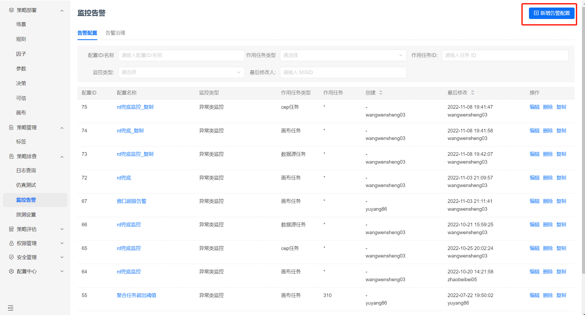
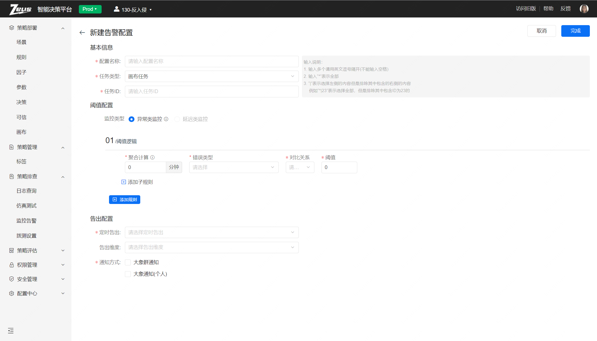
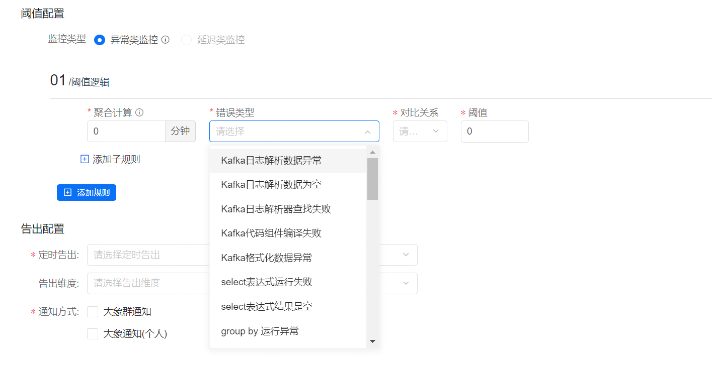
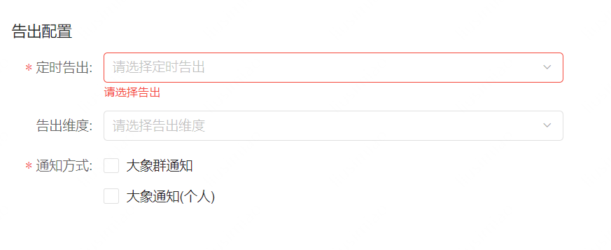
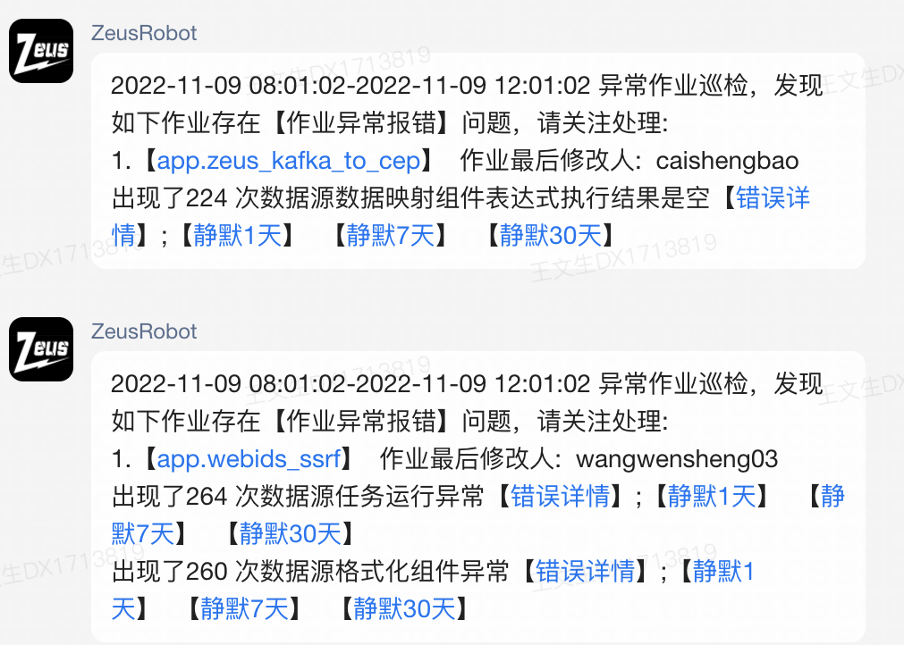
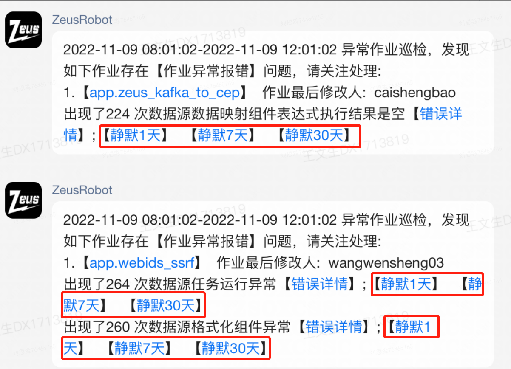
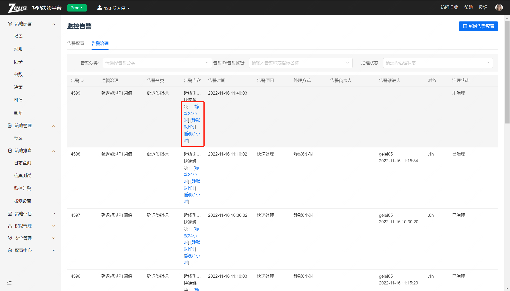
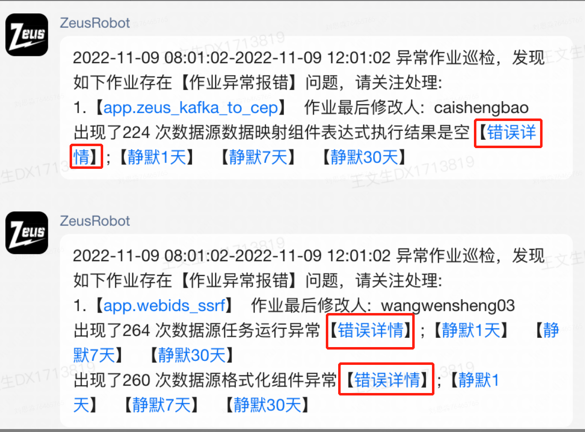
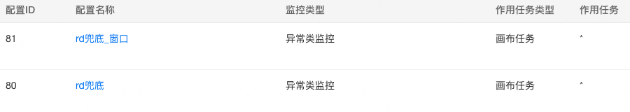

说明：画布 - 异常监控治理
一、背景
-
存量告警多且杂乱，业务治理无从下手，告警治理效率低
- 告警量较大需要一定维度的聚合告出，便于业务查看处理
- 未明确各类作业异常类型，业务无法自行配置满足需求的告警信息
二、名词释义
异常类型：即各作业配置、执行、结果过程中出现的异常情况信息。具体可参考错误类型介绍
监控治理：对各作业配置监控信息并对告警信息进行压制或治理
三、操作指南
3.1 配置告警
|
说明 |
示例图 |
|---|---|
|
 |
|
2. 指定配置的作业类型和作业id，可按照右侧规则进行批量配置 |
 |
|
3. 选择错误类型进行配置 添加子规则：规则间关系为 且 添加规则：规则间关系为 或 由于窗口超限告警形式同其他异常类告警形式不同，窗口超限类异常须单独配置 |
 |
|
4. 告出方式进行配置
|
 |
3.2 告警通知

3.3 告警治理
3.3.1 处理方式
|
说明 |
示例图 |
|
|---|---|---|
|
点击静默【点击静默，减少重复的报，减少噪音】 |
 |
 |
|
打开错误详情拿到相关报错的数据 详细的报错数据{ 2 "count": 16612, 3 "contextData": "{"factor_ex_prod_oceanus_fliter":false,"factor_webids_decode_request_body_and_decode_url_lower":"/show?dcp=vjhjn1rmvhuns9ktwcg90gn4etkpb1a3eov0xhl1ueviegmaztv8edywu4mhynheqzne37-wsi8we9n9d_ffvynn2_4n2icuecv96at2w_vklwskjnj6ob3l32r_umcpkzzagljodh33riqgah3ownslv8mqwpxjliesuts4lnruztw0onz96ynuhjqdkuhz4krjgrlcsz_-xipgiti5duulq32al5vx6t74qonmximtiptawbnjuwbm08edxxg2slclshnyz4ps0zokvpef7zpxsbxcpmcbejrtawxqnwqoiryjriyd9gm30yngtebyp5ily_xtxeqexfbxpe7a3zrmx2havhovuirp-ukpu3a4bewvv_vy7etd37h-xpmcf5dm_f8kas5cz3f16qnaxw==&driverid=9cd34ea6db5fdadb653e68f2b44f21b6","referer":"","factor_webids_response_body_lower":"","factor_webids_decode_url":"/show?dcp=vjhjn1rmvHUnS9kTWcG90GN4eTkpB1A3EOV0XHL1uevIEgmAztV8edYWU4MHynHEqZne37-WsI8WE9N9d_ffvyNN2_4n2IcueCv96at2w_vkLwSKJNJ6ob3L32r_umcpKZZaGLJodh33riqgah3ownSLV8MqWpxjliESUTS4LnruZTW0Onz96ynUHJqdKuhZ4KRJgRLcSz_-XIpGiTi5dUUlQ32AL5VX6t74QoNmximtIpTAwbNJuWBm08edXxg2SLCLShnyZ4Ps0ZOKvPEF7zpXSBxCPmCBeJrTawXQnwqOiryjriYD9gm30yNgtEbYp5Ily_XTXeQEXfbXpe7a3zrmX2havhoVUirP-UKPU3a4BEWVV_vy7etd37h-XpMCF5dm_F8Kas5Cz3f16qNAXw==&driverid=9cd34ea6db5fdadb653e68f2b44f21b6","factor_webids_sensitive":false,"_mt_logger_name":"_wpt-giant_out","body_bytes_sent":"0","response_body":"","source":"outer","ua":"SpaHttpPing/1.0","factor_webids_decode_request_body_and_decode_url":"/show?dcp=vjhjn1rmvHUnS9kTWcG90GN4eTkpB1A3EOV0XHL1uevIEgmAztV8edYWU4MHynHEqZne37-WsI8WE9N9d_ffvyNN2_4n2IcueCv96at2w_vkLwSKJNJ6ob3L32r_umcpKZZaGLJodh33riqgah3ownSLV8MqWpxjliESUTS4LnruZTW0Onz96ynUHJqdKuhZ4KRJgRLcSz_-XIpGiTi5dUUlQ32AL5VX6t74QoNmximtIpTAwbNJuWBm08edXxg2SLCLShnyZ4Ps0ZOKvPEF7zpXSBxCPmCBeJrTawXQnwqOiryjriYD9gm30yNgtEbYp5Ily_XTXeQEXfbXpe7a3zrmX2havhoVUirP-UKPU3a4BEWVV_vy7etd37h-XpMCF5dm_F8Kas5Cz3f16qNAXw==&driverid=9cd34ea6db5fdadb653e68f2b44f21b6","slb_name":"set-zf-nginx-wpt-giant03.mt","response_content_type":"text/html","client_ip":"101.89.14.154","slb_ip":"::ffff:10.188.3.113","factor_webids_output_app_zeus_inspect_data":false,"method":"GET","cookie":"","slb_port":"80","webidsenv":"prodextranet","__SOURCE_TOPIC__":"org.webids_oc_ng-wpt-giant","factor_webids_emergency":false,"response_length":"0","_mt_datetime":"2022-11-09 15:06:23","domain":"impdsp.meituan.com","oceanus_domains_all_domain_s3":1,"request_head":{},"status":"200","factor_webids_waimai_sensitive_response":false,"factor_webids_header_location":"None","var_vuln_matched":"unknown","oceanus_domains_all_ex_domain_s3":-1,"factor_webids_decode_request_body":"","domain_head":"i","sceneIds":[7936,7873,7465,14155,7276,10415,7253,12501,22134,16858,16859,7743,22367],"client_port":"41365","request_time":"0.006","factor_webids_output_app_zeus_kafka_to_cep":false,"factor_webids_decode_request_body_and_decode_url_and_ua":"/show?dcp=vjhjn1rmvHUnS9kTWcG90GN4eTkpB1A3EOV0XHL1uevIEgmAztV8edYWU4MHynHEqZne37-WsI8WE9N9d_ffvyNN2_4n2IcueCv96at2w_vkLwSKJNJ6ob3L32r_umcpKZZaGLJodh33riqgah3ownSLV8MqWpxjliESUTS4LnruZTW0Onz96ynUHJqdKuhZ4KRJgRLcSz_-XIpGiTi5dUUlQ32AL5VX6t74QoNmximtIpTAwbNJuWBm08edXxg2SLCLShnyZ4Ps0ZOKvPEF7zpXSBxCPmCBeJrTawXQnwqOiryjriYD9gm30yNgtEbYp5Ily_XTXeQEXfbXpe7a3zrmX2havhoVUirP-UKPU3a4BEWVV_vy7etd37h-XpMCF5dm_F8Kas5Cz3f16qNAXw==&driverid=9cd34ea6db5fdadb653e68f2b44f21b6SpaHttpPing/1.0","upstream_ip":"10.180.34.101","factor_webids_mt_datetime_range":true,"url_path":"/show","cluster_name":"_wpt-giant","httptype":"http","cacheVersion":19923178,"mt_datetime":"2022-11-09 15:06:23","message":" \\n","request_body_length":0,"url":"/show?dcp=vjhjn1rmvHUnS9kTWcG90GN4eTkpB1A3EOV0XHL1uevIEgmAztV8edYWU4MHynHEqZne37-WsI8WE9N9d_ffvyNN2_4n2IcueCv96at2w_vkLwSKJNJ6ob3L32r_umcpKZZaGLJodh33riqgah3ownSLV8MqWpxjliESUTS4LnruZTW0Onz96ynUHJqdKuhZ4KRJgRLcSz_-XIpGiTi5dUUlQ32AL5VX6t74QoNmximtIpTAwbNJuWBm08edXxg2SLCLShnyZ4Ps0ZOKvPEF7zpXSBxCPmCBeJrTawXQnwqOiryjriYD9gm30yNgtEbYp5Ily_XTXeQEXfbXpe7a3zrmX2havhoVUirP-UKPU3a4BEWVV_vy7etd37h-XpMCF5dm_F8Kas5Cz3f16qNAXw%3D%3D&driverid=9cd34ea6db5fdadb653e68f2b44f21b6","factor_webids_extract_log4j_payload_regex":"unknown","request_body":"","response_head":{},"factor_webids_output_app_webids_upload_files":false,"upstream_name":"com.sankuai.giant.dsp.imp","response_encoding_type":"","time":"09/Nov/2022:15:06:22 +0800","factor_webids_output_app_webids_backup_01":false,"factor_webids_output_app_webids_backup_02":false,"upstream_port":"8418"}", 4 "operatorId": -1, 5 "sourceId": 193, 6 "timestamp": 1667977583149, 7 "mt_datetime": "2022-11-09 15:07:23+0800", 8 "sourceData": null, 9 "errorCode": "05035", 10 "exceptionMessage": "", 11 "jobType": "dataSource", 12 "exceptionType": "表达式执行异常", 13 "phase": "dataSource.expression", 14 "es_timestamp": "2022/11/09 15:07:23 +0800", 15 "message": "Execute expression error", 16 "config": "!(domain == "") && ((string.substring(request_body,1,4) == "PNG" && string.substring(response_body,1,4) == "PNG" && (string.contains(request_body, "-(Ljava/lang/String;)Ljava/lang/StringBuilder") || string.contains(request_body, "java/lang/Object"))))", 17 "requestId": "yg-data-hdp-dn-rtyarn5517-202211081021-26670064", 18 "alarmType": "异常类监控", 19 "es_datetime": "2022-11-09 15:07:23.208" 20 } |
{ "jobId":107,// Zeus平台任务id "jobType":"canvas", // 任务类型 canvas:画布、dataSource:数据源、cep:cep作业 "operatorId":12 //具体的报错算子【画布作业有用】 "phase":"SIDE_OUTPUT", //操作类型 "msg":"表达式执行异常", // 错误信息的描述 "contextData":{\\"ifElseRule3\\":false,\\"ifElseRule2\\":false,\\"ifElseRule1\\":null}, //上下文处理的数据【可以带入表达式里面执行】 "sourcedata":{\\"ifElseRule3\\":false,\\"ifElseRule2\\":false,\\"ifElseRule1\\":null}, //源数据【导致此次报错的kafka数据，可以仿真测试使用】 "config":"ifElseRule1 && ifElseRule2\\",//配置信息（JSON） "exception":"",//异常栈 "logType":"exception",//异常类型 “mt_datetime”：“2022-06-02 11:28:08+0800”//时间戳 } |
 |
|
点击相关的任务，排查相关报错【错误类型介绍】 |
||
3.3.2 存量告警处理
治理目标：
- 【存量作业】：业务同学名下负责作业发现一次告警处理一次，对作业有影响的告警按照排查实践文档解决问题，对作业影响不大的作业可前往监控配置模块删除配置，已治理作业及时同步至列表各业务领域存量告警治理情况，最终达到存量告警逐渐收敛的目标
- 【增量作业】：对作业有影响的告警按照排查实践文档解决问题，对作业影响不大的作业可前往监控配置模块删除配置，尽量降低增量作业告警
- 存量作业的报错列表
四、FAQ
-
当前的异常类型及导致的原因有哪些？
-
我是新业务，RD提示新业务做兜底告警，如何配置？
A：RD提示新业务做兜底告警，即将全部错误类型配置成 30分钟错误类型>0 即可，大象群通知:66386558140；告警负责人填写对接的RD。注意窗口类异常需要独立一个告警配置。如图所示：
